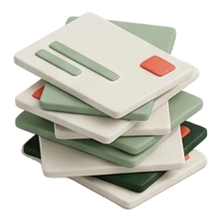
01 / AuditGather
Brand book, logos, brochures, presentations, reports and digital products are looked at as one body of work, rather than as separate files.
I turn a company's visual heritage into a system that the team and artificial intelligence use every day: more content, produced faster, with the brand holding together along the way.
OpenEconomics' visual heritage was already consistent: brochures, presentations, reports and digital products built over time and aligned with each other. The challenge was production. The marketing team needed to keep creating content (presentations, PDFs, web pages, reports) on their own and faster, staying consistent with everything that already existed.
This page shows how that identity became a production infrastructure, and how the same method can work for your brand. The outputs shown are in production at the client.
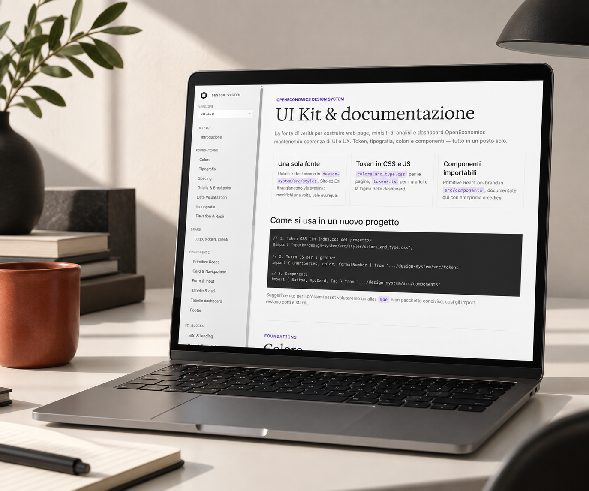

01 / AuditBrand book, logos, brochures, presentations, reports and digital products are looked at as one body of work, rather than as separate files.
Hierarchies, recurring patterns, tone, composition, typography and the use of data become explicit, verifiable principles.
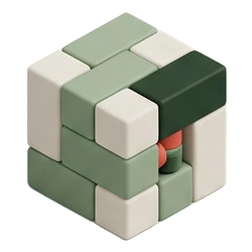
03 / SystemTokens, components, grids, patterns, templates and constraints turn the identity into a reusable tool.
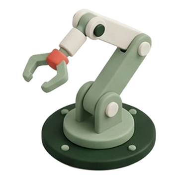
04 / AIThe system gives artificial intelligence the context it needs to generate new outputs while staying consistent.
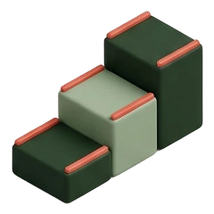
05 / TrainingThe team learns to use the system, to recognise when a result isn't right and to grow the library. Without this step the system stays a tool of the supplier instead of the company.
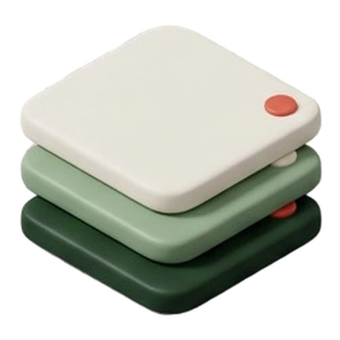
01The core decisions that define the visual character and behaviour of the system.
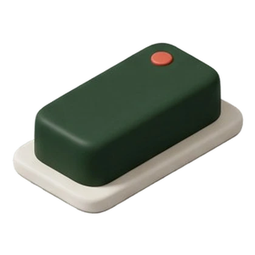
02Reusable primitives that translate the rules into consistent, accessible interfaces.
Complete compositions that speed up building pages and products while keeping the brand's direction.
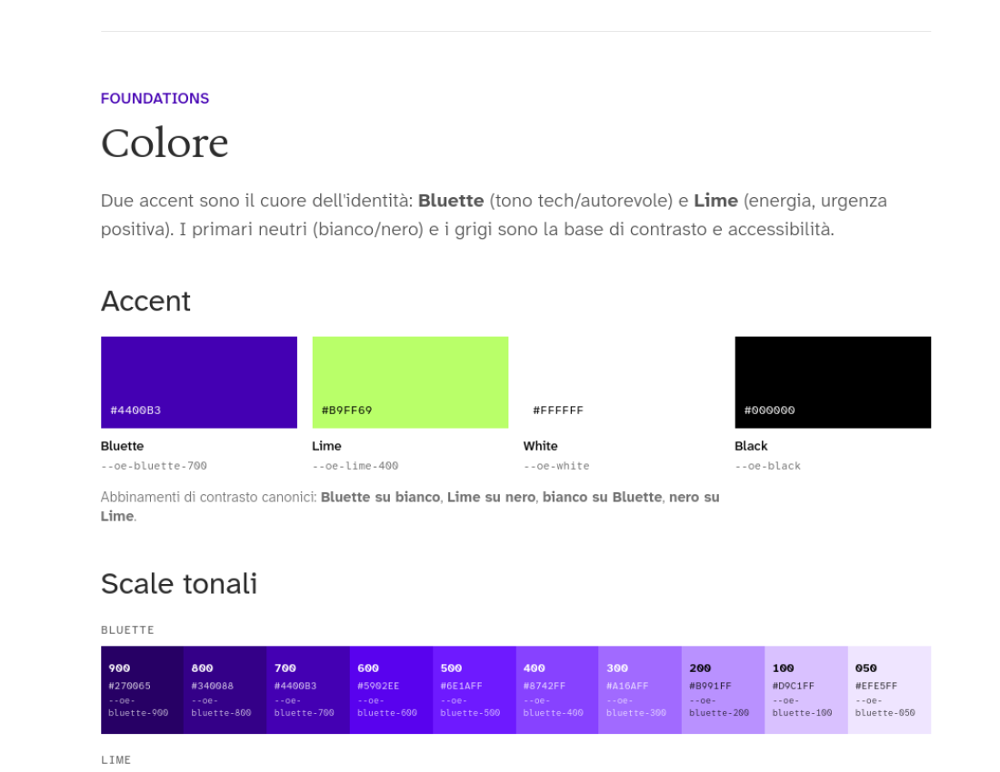
Palettes are expressed as tokens and tonal scales; each typeface family has a distinct role for headings, long-form text, tags and numerical data.
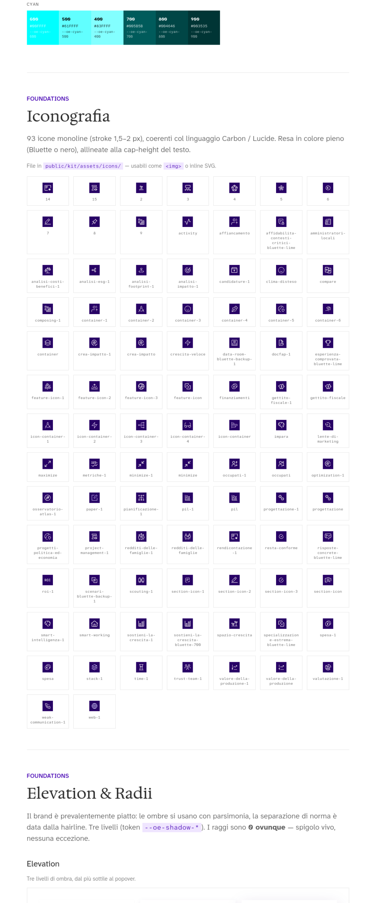
A consistent monoline library, ready to use as files or components and kept aligned with the typography.
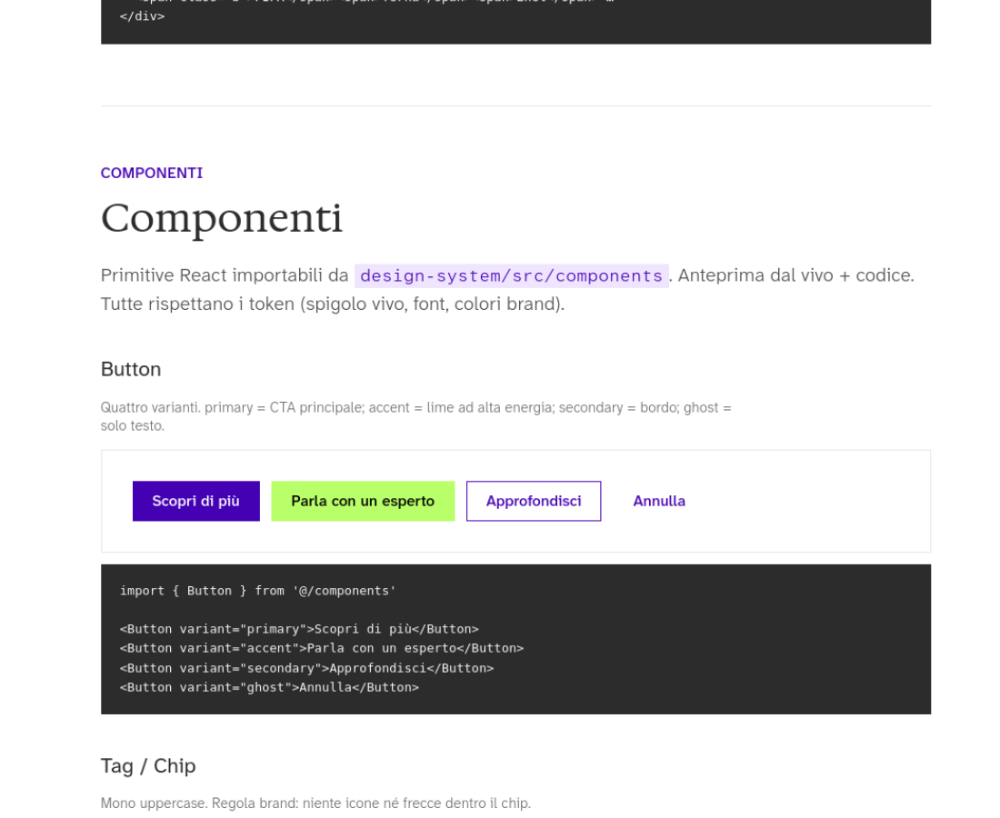
Each element combines preview, usage rule and implementation, shortening the distance between design and development.
CSS and JavaScript tokens, fonts and importable components make it possible to change a rule once and carry it through to every connected product.
The system documents behaviour as well as appearance: when to use a component, how to compose it and which exceptions to avoid.
Numerical tables, KPIs, labels, charts and dashboards treat data as identity material, essential for a brand that works with socio-economic analysis.
UI blocks for the website, reports and applications show that the system is concrete: it is designed to generate different families of output.
Named rules, correct examples and reusable patterns become structured context that artificial intelligence can understand and apply.
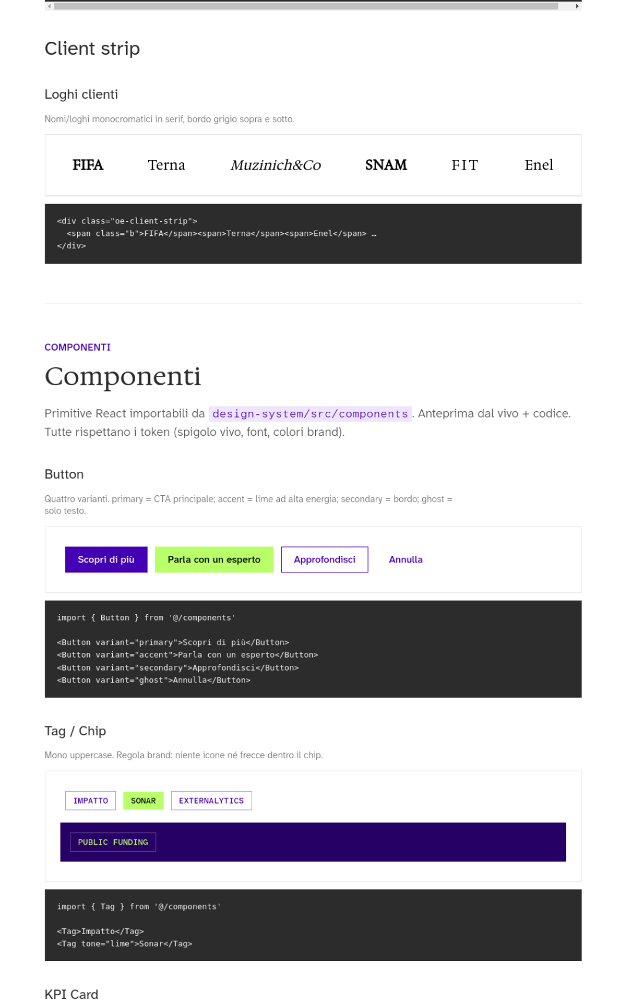
Variants, states and code are documented together on the design system's real screen.
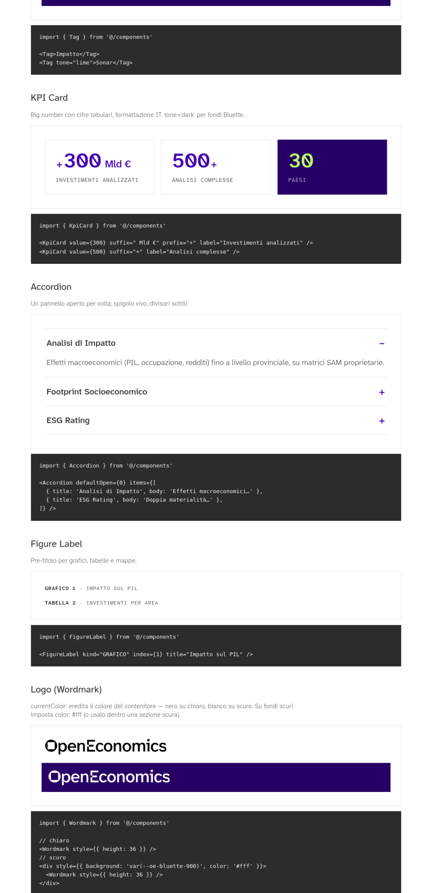
KPIs, labels and interactive patterns translate the language of data into reusable elements.
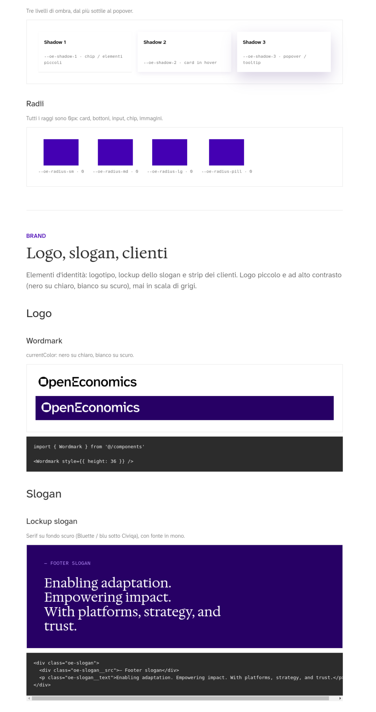
Logo, tagline and editorial applications show how the identity comes together beyond the single component.
The complete library is shown in its real context, with no illustrative reconstructions.
A model that produces quickly also makes mistakes quickly. That's why I go beyond the rules: I define how a result is judged before it reaches the client. The judgement lives in files, and does not depend on who happened to be in the room that day.
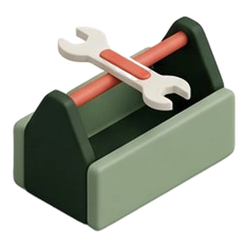
01 / ComplianceColours, spacing, typography and components are tokens and constraints. Anything that breaks the system shows up immediately and is fixed at the source, before it spreads downstream.
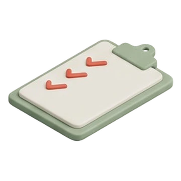
02 / QualityHierarchy, readability, compositional balance, treatment of data: every output is assessed against named criteria. The same criteria apply to me, to the team and to the AI.
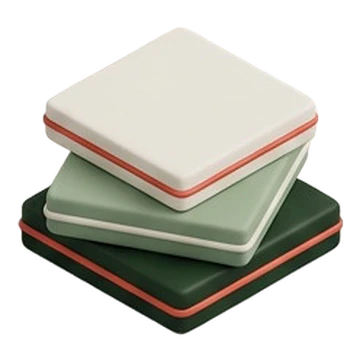
03 / TasteApproved and rejected examples are kept together with the reason behind each choice. This is how the system learns to tell what is correct from what is good.
It's the difference between an AI that produces and one that knows when to stop.
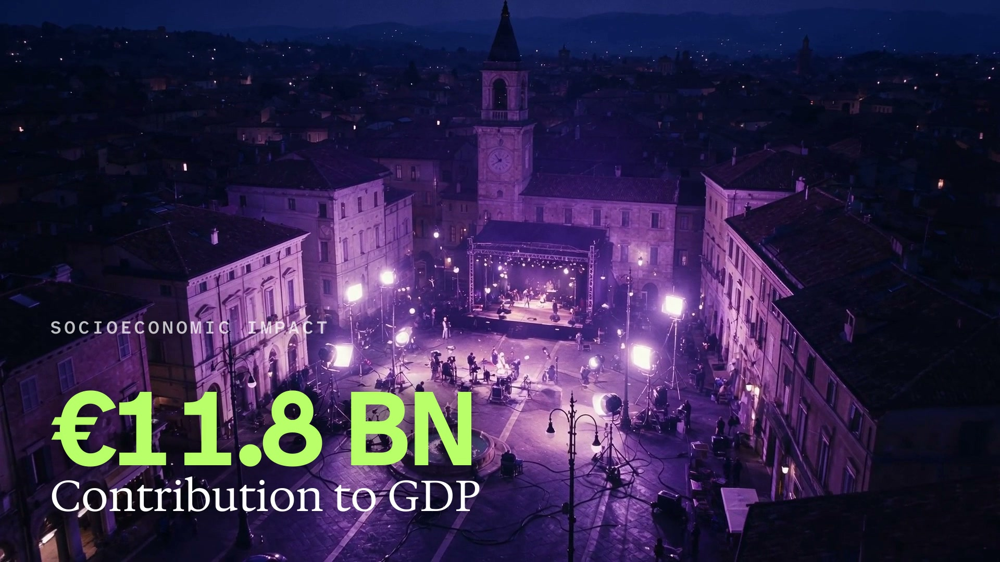
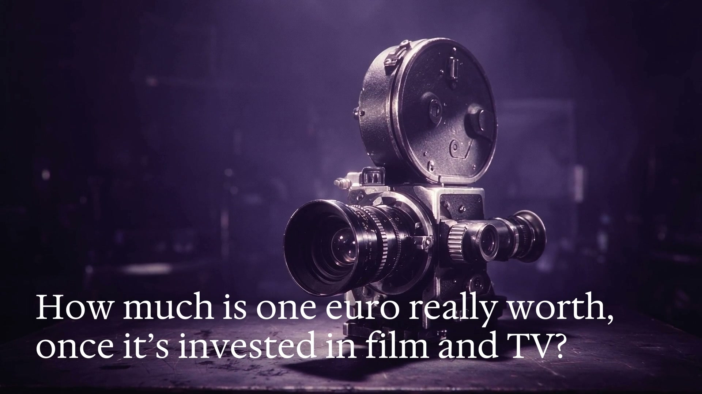
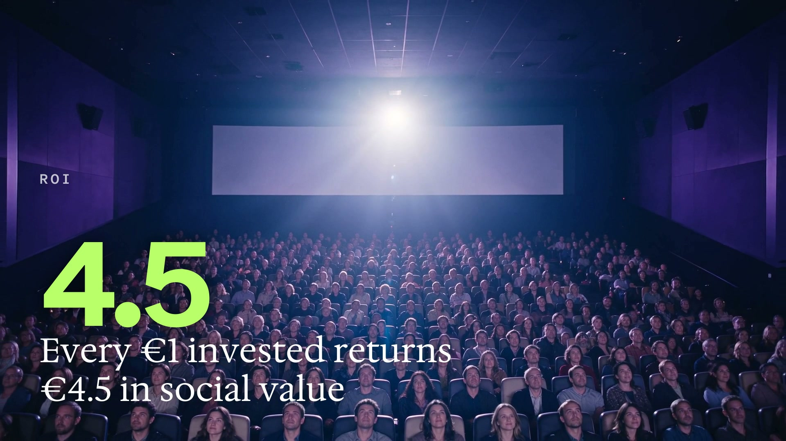
Generated and animated images, voice, music, motion titles and editing were produced without traditional video editing software.
The HTML storyboard made structure, scenes, texts and prompts visible, simplifying exchanges with the client before final production.
Image treatment, fonts, colours, hierarchies and pacing remain recognisably OpenEconomics in every frame.
The design system becomes a working direction: it shortens the distance between idea, approval and final output while keeping quality and visual continuity.
HTML storyboard shared with the client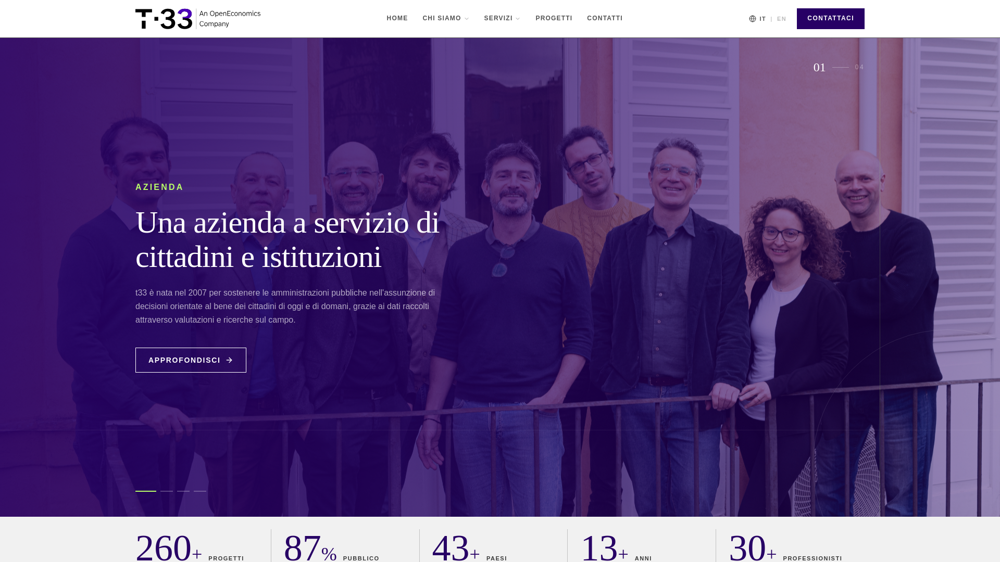
A complete web ecosystem, consistent with the OpenEconomics visual framework and designed to last over time, far beyond a single landing page.
Website in production, managed by the clientTypography, colours, grids, data and components translate the brand's language into an extended digital experience.
The client can add and update team members, articles and projects through a dedicated back office.
The system protects the visual direction while the organisation keeps day-to-day control of its own content.
I deliver an identity, and I teach artificial intelligence to apply it and to recognise when it doesn't work.
Every new piece of content starts from the same rules and the same visual heritage. Nobody has to ask what the rule is: they open it.
A complete video (images, voice, music, editing) made from the same system, with structure and texts approved before production.
A whole website the client updates from its own back office, without going through me for every piece of content. The creative direction stays protected by the system.
I look at all the material you already have (brand book, presentations, website, reports, social media) and tell you what can be systematised, what needs redoing and what is best left as it is.
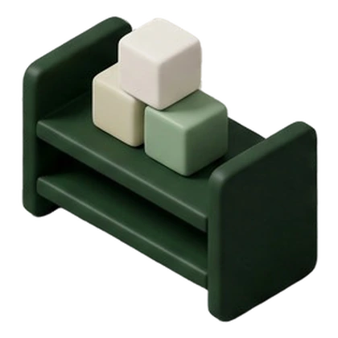
Step 02 · BuildI build the library everything starts from: tokens, components, blocks and the instructions that let artificial intelligence work inside your brand.
A system that stands still gets old. Every month new blocks and formats are added, the archive of decisions is updated and the team's production stays under control.
This case starts from an identity that already existed. The system can also be built together with a new identity, when one needs to be created or renewed: in that case the tools arrive with the visual language, instead of years later.
Timing depends on how much existing material there is and is set after the audit. Bespoke creative work (campaigns, new identities, one-off projects) stays outside the retainer and is quoted separately: the system is there to free up time for that work.
A brand book describes; a system executes. The PDF says which blue to use: the system makes sure the wrong blue can't be used at all, because the rule lives in the code that generates the materials. The brand book stays, and becomes the source the work starts from.
It doesn't need to be. The people who produce content work with a searchable library and a back office: they pick a block, write, publish. The code sits underneath and is for me and the developers.
Yes, if it works without constraints, which is exactly what happens when it's used without a system. Here the AI receives named rules, correct examples, rejected examples and assessment criteria: it applies the direction instead of inventing it. And we are the ones who decide the direction.
The system is yours. Tokens, components, documentation and archive stay in your repository, in open formats anyone can read. No lock-in: you renew the retainer because it's useful to you, and only for that reason.
It starts with a thirty-minute call: I look at the material you already have and tell you what can be systematised, and, honestly, what can't. If it makes sense to go ahead, the first step is the audit.
Write to me at info@alessiogranella.com · alessiogranella.com
I've received your message. I'll reply within one working day, from the same address: info@alessiogranella.com.
 02 / Reading
02 / Reading
 Step 03 · Continuity
Step 03 · Continuity